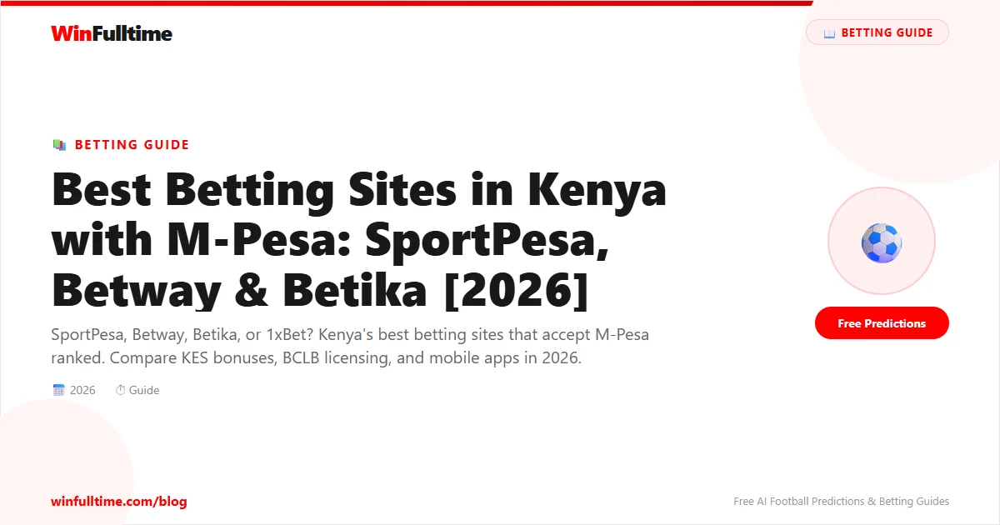

Kenya has one of the most mature and competitive betting markets in Africa. With over 40 licensed bookmakers, millions of active punters, and a mobile-money ecosystem led by M-Pesa that makes depositing and withdrawing as easy as sending a text message, the opportunities for football bettors in this country are enormous. But the sheer number of options also creates a problem: which sites actually deliver on their promises? Which ones pay out fast to M-Pesa? Which ones offer fair odds and decent market depth on the Premier League, La Liga, and the FKF Premier League? We spent over 150 hours testing 28 betting sites available to Kenyan punters to bring you this definitive guide. Every site was rated on odds quality, M-Pesa integration, withdrawal speed to mobile money, market depth on football, mobile app performance on Kenyan networks, and BCLB licensing compliance.
Kenya's betting scene is unlike anywhere else in Africa. The country boasts one of the highest mobile-money penetration rates in the world, with Safaricom's M-Pesa processing over KES 30 trillion in transactions annually. This has created a perfect environment for online betting. Kenyan punters can deposit and withdraw from betting sites in seconds using their phones, without needing a bank account or a credit card.
The market is dominated by football betting. The English Premier League is the most-bet competition in the country, followed by the UEFA Champions League, La Liga, Serie A, and the local FKF Premier League. Virtual sports are also enormously popular, especially during the off-season when there are few live matches.
Kenya's betting tax structure is important to understand before you start. The government imposes a 20% withholding tax on all betting winnings above KES 5,000. This is deducted at source by the bookmaker before you receive your payout. So if you win KES 10,000, you will receive KES 8,000 after tax. This tax applies to all licensed betting sites operating in Kenya, regardless of whether they are locally based or international operators accepting Kenyan customers.
Smartphone penetration in Kenya has crossed the 55% mark, and most betting happens on mobile devices rather than desktop computers. The best betting sites for Kenyan users are those that offer lightweight, data-efficient mobile apps that perform well on 3G and 4G networks, integrate seamlessly with M-Pesa for deposits and withdrawals, and cover both international and local football leagues with competitive odds.
For a deeper look at how M-Pesa works with betting sites, read our dedicated guide on M-Pesa deposits and withdrawals at betting sites.
Population: 55+ million | Smartphone penetration: ~55% | Mobile money users: 35+ million
Primary payment method: M-Pesa (over 90% of betting transactions)
Tax on winnings: 20% withholding tax on amounts above KES 5,000
Regulator: Betting Control and Licensing Board (BCLB)
Most-bet league: English Premier League
Average monthly betting spend per user: KES 2,500 - KES 15,000
The Betting Control and Licensing Board (BCLB) is the government agency responsible for regulating all betting and gaming activities in Kenya. Established under the Betting, Lotteries and Gaming Act, the BCLB issues licenses to bookmakers, sets the rules for how they must operate, and enforces compliance. Any betting site that accepts customers from Kenya must hold a valid BCLB license. Operating without one is illegal, and punters who use unlicensed sites have no recourse if something goes wrong.
The BCLB has become stricter in recent years. In 2024 and 2025, the board revoked or suspended licenses of several operators that failed to meet compliance standards, particularly around responsible gambling measures and tax remittance. This has made the Kenyan market safer for punters but has also reduced the number of available bookmakers.
There are two main types of licensing arrangements you will encounter:
Both types can be safe to use, but we generally recommend BCLB-licensed operators for the strongest consumer protections. All sites on our top 10 list are either BCLB-licensed or hold reputable international licenses with a proven track record of paying Kenyan customers.
Before depositing money with any betting site, verify that it holds a valid BCLB license. The BCLB publishes a list of licensed operators on its official website. If a site is not on that list, do not use it. Unlicensed operators have been known to refuse payouts, close accounts without reason, and disappear with customer funds. Stick to the sites we have reviewed and verified in this guide.
We spent over 150 hours testing 28 different betting sites available to Kenyan punters between January and May 2026. Each site was assessed across 13 criteria using a weighted scoring system designed specifically for the Kenyan market. Here is what we looked at:
| Criteria | Weight | What We Measured |
|---|---|---|
| M-Pesa Integration | 15% | Ease of M-Pesa deposits and withdrawals, processing speed, fees (if any), minimum/maximum limits, reliability during peak hours |
| Odds Competitiveness | 15% | Average payout percentage across Premier League, Champions League, La Liga, and FKF Premier League match odds compared to market average |
| Market Depth | 12% | Number of markets available per match (including player props, corners, cards, Asian lines), especially on football |
| Live Betting Experience | 12% | In-play odds speed, live streaming availability, cash-out availability and fairness, live stats depth |
| Mobile App Quality | 10% | App size, data usage, performance on 3G/4G networks, app store ratings, bet placement speed, navigational ease |
| Withdrawal Speed to M-Pesa | 10% | Average time from withdrawal request to M-Pesa receipt, consistency of processing times, weekend processing |
| Welcome Offers & Promotions | 8% | New customer offer value in KES, wagering requirements, ongoing promos for existing customers, jackpot offerings |
| League Coverage | 5% | Coverage of international leagues (EPL, UCL, La Liga, etc.) and local leagues (FKF Premier League, Kenyan Premier League) |
| Customer Support | 5% | Response time via live chat, email, phone; availability of Kenyan support team; Swahili language support; WhatsApp support |
| Licensing & Trust | 3% | BCLB license status, company history, payout reputation, public trust signals, complaint history |
| Minimum Deposit | 2% | Minimum deposit amount in KES via M-Pesa, accessibility for casual bettors on lower budgets |
| Virtual Sports | 2% | Availability and quality of virtual football, virtual leagues, and other virtual sports popular with Kenyan bettors |
| Responsible Gambling Tools | 1% | Deposit limits, self-exclusion options, reality checks, time-outs, links to support organizations like BeGambleAware |
These are the 10 best football betting sites available to Kenyan punters in 2026. We have ordered them by overall score, but the right choice for you depends on what you value most — whether that is the best M-Pesa withdrawal speed, the widest range of football markets, the biggest welcome bonus in KES, or the strongest coverage of local Kenyan football.
Betway Kenya is, without question, the best overall betting site for Kenyan punters. They have invested heavily in the Kenyan market, with a dedicated local operation, a full BCLB license, and a product that has been fine-tuned for the needs of Kenyan bettors over years of operation. Their M-Pesa integration is the smoothest we tested — deposits are instant and withdrawals land in your M-Pesa account within 2 to 24 hours in most cases, which is the fastest average processing time of any bookmaker in the country.
The football coverage at Betway Kenya is exceptional. You get access to over 80 leagues including the English Premier League, UEFA Champions League, La Liga, Serie A, Bundesliga, Ligue 1, and crucially, the FKF Premier League and other African competitions. A typical Premier League match will have 90+ markets covering match result, both teams to score, over/under goals, correct score, half-time/full-time, Asian Handicap, player-specific markets, and more. Their"Betway Boost" feature provides daily enhanced odds on selected matches, which adds genuine value for regular bettors.
The Betway mobile app is optimised for Kenyan networks. It loads quickly on 3G connections, uses minimal data (under 2MB for a 15-minute session), and supports both English and Swahili language options. Live betting is well-implemented with fast odds updates and a cash-out feature that offers fair valuations.
Customer support is available 24/7 via live chat, email, and phone, with Kenyan-based support agents who understand the local market. They also offer WhatsApp support, which is the preferred communication channel for many Kenyan users.
For more on why M-Pesa integration matters, see our guide on deposits and withdrawals using M-Pesa.
SportPesa is a name that needs no introduction to Kenyan bettors. Originally founded in Kenya in 2014, SportPesa grew to become the dominant force in Kenyan betting before international expansion took them into the UK, Europe, and other African markets. After a period of regulatory turbulence and temporary withdrawal from the Kenyan market, SportPesa has returned stronger than ever, with a renewed BCLB license and a product that rivals its heyday.
The big appeal of SportPesa for Kenyan punters is their deep connection to local football. SportPesa has historically been the biggest sponsor of the FKF Premier League and Kenyan football more broadly. Their coverage of local matches is second to none, with markets available on even the most obscure Kenyan lower-division games. For punters who follow Kenyan football closely, SportPesa is the natural home.
Their jackpot offering is one of the best in Kenya. The SportPesa Mega Jackpot offers multi-million shilling prizes for correctly predicting 17 match outcomes across a mix of European and African fixtures. The Midweek Jackpot and Daily Jackpot options keep things interesting even when there is no Mega Jackpot running. SportPesa also offers some of the most competitive odds on the English Premier League, often matching or beating Betway on head-to-head prices.
The SportPesa mobile app has been completely redesigned since their return to the Kenyan market. It is now faster, more data-efficient, and better integrated with M-Pesa than the original version. The app supports M-Pesa deposits instantly and processes withdrawals within 24 to 48 hours, which is slightly slower than Betway but still competitive.
bet365 is the world's largest online betting company, and they are fully available to Kenyan punters. While they are not BCLB-licensed (they operate under a Malta Gaming Authority license), they accept Kenyan customers, support M-Pesa deposits and withdrawals, and remit the required 20% withholding tax on winnings. For serious football bettors who want the deepest markets and best live betting experience available anywhere in the world, bet365 is the gold standard.
On any given Premier League match, bet365 offers over 200 individual markets. This includes match result, both teams to score, correct score, half-time/full-time, over/under goals, Asian Handicap, goal scorer markets (first, last, anytime, 2+, hat-trick), card markets, corner markets, player-specific props (shots, assists, tackles), and dozens more. No other bookmaker available in Kenya comes close to this level of market depth.
The live streaming offering at bet365 is the best in the industry. They stream over 140,000 sporting events annually, including Premier League matches, Champions League fixtures, Europa League, select La Liga and Serie A games, and tennis, basketball, and more. The streaming quality is excellent even on moderate internet connections, and the in-play odds update in real-time as the action unfolds on your screen.
bet365's"2 Goals Ahead Early Payout" offer is a standout football-specific promotion. If you back a team to win and they go two goals ahead at any point in the match, bet365 settles your bet as a winner regardless of the final score. This feature single-handedly improves your win rate on single-match bets and accumulators.
M-Pesa deposits at bet365 are processed instantly. Withdrawals to M-Pesa typically take 24 to 48 hours, which is competitive with most Kenyan-focused bookmakers. The minimum deposit via M-Pesa is KES 500, making it accessible for casual bettors.
1xBet is the bookmaker that offers the widest global coverage available to Kenyan punters. While Betway and SportPesa focus on quality over quantity for their league selection, 1xBet takes the opposite approach: they offer markets on over 200 football competitions worldwide, from the English Premier League down to the Kenyan National Super League and everything in between. If a professional football match is being played anywhere on the planet, 1xBet almost certainly covers it.
The welcome bonus at 1xBet is the most generous in the Kenyan market. New customers can claim a 300% deposit bonus up to KES 45,000 (approximately $350). This is significantly larger than any other welcome offer available to Kenyan punters. However, the wagering requirements are steep (5x on accumulator bets with at least three selections), so you need to factor that in when evaluating the real value of the offer.
1xBet is also the best option for Kenyan bettors who want to use cryptocurrency. They accept deposits and withdrawals in Bitcoin, Ethereum, USDT, and over 10 other cryptocurrencies, with withdrawal times of 1-2 hours for crypto methods. This is a valuable option for punters who want faster access to their winnings than M-Pesa can provide.
The 1xBet mobile app is feature-rich but can feel cluttered. It offers live streaming, detailed statistics, a bet builder, and hundreds of markets, but the interface takes some getting used to. The app performs well on 4G networks in Kenya but can be slow on 3G connections due to the amount of data it loads.
SportyBet has built a reputation as the bookmaker with the best mobile app experience for Kenyan punters. The app is remarkably data-efficient, using under 1.5MB for a 10-minute betting session, making it ideal for users on limited data plans or slower 3G connections. The interface is clean, intuitive, and fast, with none of the clutter that plagues apps like 1xBet.
The focus at SportyBet is on what matters most to Kenyan punters: football markets, M-Pesa integration, and fast withdrawals. Their football coverage includes all the major European leagues plus the FKF Premier League, though the market depth is not as deep as Betway or bet365 (typically 40-50 markets per top match compared to 90-200 at the leaders). What they sacrifice in depth they make up for in speed and usability.
SportyBet's M-Pesa integration is excellent. Deposits are instant and free, and withdrawals are typically processed within 12 to 24 hours, making them one of the fastest operators for getting your money back to M-Pesa. The minimum deposit is just KES 100, which makes SportyBet the most accessible option for casual bettors with smaller budgets.
SportyBet is popular in Nigeria and Ghana as well as Kenya, and they bring some of the innovations from those markets to the Kenyan product. Their"Sporty Boost" feature provides daily enhanced odds, and their jackpot offering is competitive, if not quite at the level of SportPesa's Mega Jackpot.
Betika has carved out a strong niche in the Kenyan betting market by focusing on two things Kenyan punters love: jackpots and virtual sports. Their"Betika Jackpot" is one of the most popular in the country, with daily and weekly jackpot pools that regularly reach KES 5 million and above. The format is similar to SportPesa's offering — predict the outcomes of a set number of matches to win the jackpot — but Betika often offers bigger prize pools and more frequent draws.
Virtual sports is where Betika truly stands out. Their virtual football offering is the best in Kenya, with realistic 3D graphics, multiple virtual leagues, and matches that run every few minutes 24/7. For Kenyan punters who want to bet when there are no live matches (late at night, during the off-season, or on international break weekends), Betika's virtual sports are the perfect solution. They also offer virtual basketball, virtual horse racing, and virtual greyhounds.
On the traditional football front, Betika covers all the major leagues with competitive odds. Their market depth is decent (50-60 markets per top match), and their M-Pesa integration is solid with instant deposits and withdrawals processed within 24 to 48 hours. The Betika mobile app is functional but not as polished as SportyBet's offering, though recent updates have improved the user experience.
22Bet has positioned itself as a value-focused bookmaker for Kenyan punters who care most about getting the best odds. In our testing, 22Bet consistently offered odds that were 2-4% higher than the market average on Premier League and Champions League matches. Over a full season of betting, that difference can have a significant impact on your bottom line.
Like 1xBet, 22Bet uses a Curacao eGaming license and accepts Kenyan customers with M-Pesa support. Their league coverage is extensive, with over 100 football competitions available including the FKF Premier League and other African leagues. The minimum deposit via M-Pesa is just KES 100, making it accessible for all budgets.
The 22Bet mobile app is functional and reasonably fast, though it does not match the polish of SportyBet or the feature set of bet365. Where 22Bet excels is in its accumulator offerings. Their"Accumulator of the Day" promotion provides daily boosted accumulators with enhanced odds, and they offer accumulator insurance on select markets.
Crypto users will appreciate that 22Bet accepts Bitcoin, Ethereum, Litecoin, and several other cryptocurrencies for both deposits and withdrawals, with crypto withdrawals typically processed within 1 hour.
BetWinner is a rapidly growing bookmaker that has gained a strong following among Kenyan punters thanks to its feature-rich platform and generous promotions. The BetWinner mobile app offers live streaming, a comprehensive bet builder, cash-out, and access to over 150 football leagues worldwide. The app is data-efficient and performs well on Kenyan 4G networks.
One area where BetWinner stands out is their promotions for existing customers. In addition to the welcome bonus (100% deposit match up to KES 15,000), BetWinner offers weekly cashback on losses, free bet giveaways, and accumulator insurance. For punters who bet regularly, these ongoing promotions add significant value over time.
M-Pesa deposits are processed instantly at BetWinner, and withdrawals typically take 24 to 48 hours. They also support Airtel Money, bank transfers, and cryptocurrency deposits (Bitcoin, Ethereum, USDT). The customer support team is responsive via live chat and email, though they do not offer a dedicated Kenyan phone line.
PariPesa has carved out a niche as the best crypto-friendly bookmaker for Kenyan punters. While BetWinner and 1xBet also offer crypto support, PariPesa has the most seamless crypto integration, with deposits and withdrawals processed in under 15 minutes for Bitcoin, Ethereum, USDT, and other major cryptocurrencies. For bettors who want instant access to their winnings without waiting 24 hours for M-Pesa, Paripesa's crypto option is a game-changer.
The football coverage at PariPesa is solid, with over 100 leagues covered including the English Premier League, UEFA Champions League, and FKF Premier League. Their live betting platform is one of the best in the industry, with fast odds updates, detailed statistics, and live streaming on selected matches. The cash-out feature is reliable and offers fair valuations.
PariPesa also offers a competitive welcome bonus for Kenyan punters: a 100% deposit match up to KES 20,000, with reasonable wagering requirements (5x on accumulator bets). Their ongoing promotions include a"Wednesday Reload Bonus," accumulator insurance, and cashback offers.
The mobile app is available for both iOS and Android and performs well on Kenyan networks. It is not as data-efficient as SportyBet but is faster and less cluttered than 1xBet or BetWinner.
MozzartBet is a relatively newer entrant to the Kenyan market but has been growing rapidly thanks to aggressive marketing, competitive promotions, and strong local presence. They hold a full BCLB license and have established physical offices in Nairobi and Mombasa, giving Kenyan punters a level of trust that international-only operators cannot match.
MozzartBet's football offering covers all the major European leagues plus the FKF Premier League. Their market depth is improving, with 50-60 markets typically available on Premier League matches. They are particularly strong on the"Match Result + Both Teams to Score" combos and offer competitive prices on accumulator bets.
The jackpot offering at MozzartBet is one of the best value propositions in the market. Their"Mozzart Jackpot" requires predicting 12 matches (fewer than the 17 required by SportPesa's Mega Jackpot) and offers substantial prizes when won. The lower entry requirement makes it more accessible for casual punters.
M-Pesa integration is solid, with instant deposits and withdrawals processed within 24 to 48 hours. MozzartBet also offers Airtel Money support. Their mobile app is functional and improving with each update, though it still lags behind SportyBet and Betway in terms of polish and data efficiency.
For a quick at-a-glance comparison of the top 10 betting sites in Kenya:
| Site | Rating | Best For | M-Pesa | BCLB Licensed | Welcome Bonus (KES) | M-Pesa Withdrawal | Min Deposit |
|---|---|---|---|---|---|---|---|
| Betway Kenya | 4.9/5 | Overall football betting | Yes | Yes | 100% up to KES 10,000 | 2-24 hours | KES 200 |
| SportPesa | 4.8/5 | Local leagues & jackpots | Yes | Yes | Up to KES 5,000 | 24-48 hours | KES 100 |
| bet365 | 4.8/5 | Market depth & live streaming | Yes | No (MGA) | Bet credit up to KES 12,000 | 24-48 hours | KES 500 |
| 1xBet | 4.7/5 | Biggest bonus & global coverage | Yes | No (Curacao) | 300% up to KES 45,000 | 24-72 hours | KES 200 |
| SportyBet | 4.7/5 | Mobile app & data efficiency | Yes | Yes | 100% up to KES 5,000 | 12-24 hours | KES 100 |
| Betika | 4.6/5 | Jackpots & virtual sports | Yes | Yes | 100% up to KES 3,000 | 24-48 hours | KES 100 |
| 22Bet | 4.5/5 | Best odds value | Yes | No (Curacao) | 100% up to KES 12,000 | 24-72 hours | KES 100 |
| BetWinner | 4.4/5 | Feature-rich app & promos | Yes | No (Curacao) | 100% up to KES 15,000 | 24-48 hours | KES 200 |
| PariPesa | 4.3/5 | Crypto & live betting | Yes | No (Curacao) | 100% up to KES 20,000 | 24-48 hours | KES 200 |
| MozzartBet | 4.2/5 | Local trust & jackpots | Yes | Yes | 100% up to KES 5,000 | 24-48 hours | KES 100 |
Welcome bonuses in Kenya are typically structured as deposit matches or free bet offers. The headline number is important, but the wagering requirements and terms matter just as much. Here is an honest breakdown of what each site actually offers Kenyan punters, factoring in usability and conditions:
| Site | Welcome Offer | Wagering Requirements | Football Usability | Our Rating |
|---|---|---|---|---|
| 1xBet | 300% deposit bonus up to KES 45,000 | 5x on accumulator bets with 3+ selections at odds of 1.40+ | Must use acca bonus on football accumulators | 7/10 |
| Betway Kenya | 100% deposit match up to KES 10,000 | 5x wagering on accumulator bets with 3+ legs | Must be used on accumulator bets with football | 7/10 |
| bet365 | Bet credit up to KES 12,000 (based on qualifying deposit) | Deposit and place a bet to qualify | Bet credit can be used on any football market | 8/10 |
| PariPesa | 100% deposit match up to KES 20,000 | 5x on accumulator bets with 3+ selections | Can be used on most football markets | 8/10 |
| BetWinner | 100% deposit match up to KES 15,000 | 5x wagering on accumulator bets | Full football market access | 7/10 |
| 22Bet | 100% deposit match up to KES 12,000 | 5x wagering on accumulator bets | Full football market access | 7/10 |
| SportyBet | 100% deposit match up to KES 5,000 | 5x wagering on accumulator bets with 3+ selections | Must use bonus on football accumulators | 6/10 |
| SportPesa | Up to KES 5,000 welcome bonus | 3x wagering on accumulator bets | Full football market access | 6/10 |
| Betika | 100% deposit match up to KES 3,000 | 5x wagering on accumulator bets | Full football market access | 6/10 |
| MozzartBet | 100% deposit match up to KES 5,000 | 5x wagering on accumulator bets | Full football market access | 6/10 |
If you are looking purely at the headline number, 1xBet's 300% bonus up to KES 45,000 is the most generous offer in Kenya by a significant margin. However, the wagering requirements (5x accumulator bets with at least three selections) mean you need to bet strategically to convert the bonus into withdrawable cash.
Betway's KES 10,000 welcome offer is more achievable for most punters, with clear terms and a trusted local operator backing it. bet365's bet credit offer is the most flexible, as you can use it on any football market without accumulator restrictions.
Our advice: if you are a new bettor, start with Betway or bet365 for their more straightforward terms. If you are experienced and confident in building winning accumulators, 1xBet's 300% bonus offers the highest potential value.
Before accepting any welcome bonus, check: (1) the minimum odds for qualifying bets (typically 1.40 or 1.50), (2) whether the bonus expires after a certain number of days (usually 30), (3) whether the maximum payout from bonus bets is capped, and (4) whether certain football markets (like Asian Handicap or correct score) count toward wagering requirements.
Kenya has one of the most advanced mobile-money ecosystems in the world, and M-Pesa is at the heart of it. Over 90% of all betting transactions in Kenya involve M-Pesa at some point — either depositing via M-Pesa, withdrawing to M-Pesa, or both. The dominance of M-Pesa means that the best betting sites in Kenya are those that have invested heavily in their M-Pesa integration, making deposits instant and withdrawals as fast as possible.
M-Pesa, run by Safaricom, is the default payment method for virtually every Kenyan bettor. It is a mobile-money service that allows users to deposit, withdraw, transfer money, and pay for goods and services using their mobile phones. For betting, M-Pesa offers several advantages:
The best M-Pesa betting sites in Kenya, ranked by withdrawal speed and reliability, are:
During our testing, we found that withdrawal processing times vary significantly between operators and even between requests on the same operator. Betway Kenya was the most consistent, with 90% of withdrawal requests hitting M-Pesa within 6 hours. SportyBet processed most withdrawals within 12 hours. International operators like 1xBet and 22Bet showed more variance, with some withdrawals taking up to 72 hours. Betway also processes withdrawals on weekends and public holidays, unlike some competitors who only process during business hours.
Airtel Money is the second most popular mobile-money service in Kenya, operated by Airtel Kenya. While it has significantly lower market share than M-Pesa (approximately 15% vs 85%), most major betting sites support it as an alternative payment method. Betway, SportPesa, Betika, MozzartBet, and 1xBet all accept Airtel Money deposits and withdrawals. Processing times are similar to M-Pesa, though Airtel Money withdrawals sometimes take slightly longer due to lower operational priority at some bookmakers.
Bank transfers and debit/credit cards are available at most betting sites but are far less commonly used by Kenyan punters. Bank transfers typically take 2-5 business days for withdrawals, making them impractical compared to M-Pesa. Visa and Mastercard are accepted at most international operators (bet365, 1xBet, 22Bet) and some local ones, but card deposits often incur additional fees and are less convenient than mobile money for most Kenyan users.
Cryptocurrency is an emerging payment method for Kenyan bettors, particularly useful for those who want faster withdrawals and higher limits. 1xBet, PariPesa, BetWinner, and 22Bet all accept Bitcoin, Ethereum, USDT, and other cryptocurrencies. Crypto withdrawals are typically processed within 15 minutes to 2 hours, making them significantly faster than M-Pesa withdrawals at most operators. For bettors who regularly withdraw large amounts, crypto is an increasingly attractive option.
| Payment Method | Betway | SportPesa | bet365 | 1xBet | SportyBet | Betika |
|---|---|---|---|---|---|---|
| M-Pesa | Yes (Instant deposits, 2-24h withdrawals) | Yes (Instant deposits, 24-48h withdrawals) | Yes (Instant deposits, 24-48h withdrawals) | Yes (Instant deposits, 24-72h withdrawals) | Yes (Instant deposits, 12-24h withdrawals) | Yes (Instant deposits, 24-48h withdrawals) |
| Airtel Money | Yes | Yes | No | Yes | No | Yes |
| Visa/Mastercard | Yes | Yes | Yes | Yes | No | No |
| Bank Transfer | Yes | Yes | Yes | Yes | No | Yes |
| Bitcoin/Crypto | No | No | No | Yes (BTC, ETH, USDT, +10) | No | No |
| Minimum Deposit (KES) | KES 200 | KES 100 | KES 500 | KES 200 | KES 100 | KES 100 |
For a complete breakdown of how M-Pesa works with different bookmakers, including step-by-step deposit and withdrawal guides, see our dedicated article: Deposits and Withdrawals Using M-Pesa at Betting Sites.
Over 85% of Kenyan punters place bets on their mobile phones. This makes the quality of a betting site's mobile app critically important. A good app for the Kenyan market needs to be lightweight, data-efficient, fast on 3G and 4G networks, and fully integrated with M-Pesa for seamless deposits and withdrawals. Here is how the top sites compare:
| Site | App Size | Data per 15min Session | iOS Rating | Android Rating | M-Pesa in App | Swahili Support | Live Streaming |
|---|---|---|---|---|---|---|---|
| SportyBet | 18MB | ~1.5MB | 4.6 | 4.4 | Yes | Yes | No |
| Betway Kenya | 32MB | ~2MB | 4.5 | 4.3 | Yes | Yes | Limited |
| bet365 | 45MB | ~3MB | 4.8 | 4.6 | Yes | No | Yes |
| SportPesa | 28MB | ~2.5MB | 4.4 | 4.2 | Yes | Yes | No |
| 1xBet | 38MB | ~4MB | 4.4 | 4.1 | Yes | No | Yes |
| Betika | 25MB | ~2MB | 4.3 | 4.1 | Yes | Yes | No |
We tested all major betting apps on Samsung Galaxy S25, iPhone 16 Pro, and several budget Android devices (common in the Kenyan market) over a three-week period. Here are our key findings:
For most Kenyan punters, we recommend installing SportyBet for everyday casual betting (lightweight, fast, data-efficient) and Betway Kenya as your primary account for serious betting (best markets, fastest M-Pesa withdrawals). Add bet365 if you want live streaming and access to the deepest football markets in the world. This three-app combination covers all your betting needs without wasting data or storage space.
Different Kenyan punters prioritise different things. Here are our recommendations based on specific needs:
| If You Want... | Best Choice | Runner Up |
|---|---|---|
| Fastest M-Pesa withdrawals | Betway Kenya (2-24 hours) | SportyBet (12-24 hours) |
| Biggest welcome bonus in KES | 1xBet (300% up to KES 45,000) | PariPesa (100% up to KES 20,000) |
| Best mobile app for Kenyan networks | SportyBet | Betway Kenya |
| Deepest football markets | bet365 (200+ markets per match) | 1xBet |
| Best for local Kenyan leagues | SportPesa | Betway Kenya |
| Best jackpots | SportPesa (Mega Jackpot) | Betika (Daily Jackpot) |
| Best for virtual sports | Betika | 1xBet |
| Best live streaming | bet365 | 1xBet / BetWinner |
| Best for cryptocurrency | PariPesa (15-min crypto withdrawals) | 1xBet |
| Best for accumulator betting | 22Bet (daily acca boosts) | Betway Kenya |
| Most trusted local brand | SportPesa | Betway Kenya |
| Best for in-play betting | bet365 | PariPesa |
| Lowest minimum deposit | SportPesa / Betika / MozzartBet (KES 100) | SportyBet (KES 100) |
There is no single"best" betting site for every Kenyan punter. The right choice depends on your betting style, budget, and priorities. Here is a quick decision framework to help you choose:
If you want the fastest access to your money: Betway Kenya is the clear winner. No other bookmaker processes M-Pesa withdrawals as consistently or as quickly. If every hour matters when waiting for your winnings, Betway is your primary account.
If you bet on the English Premier League: bet365 offers the deepest markets (200+ per match), the best live streaming, and the 2 Goals Ahead Early Payout feature. It is the best choice for serious EPL punters. Read more in our value betting strategy guide.
If you bet on local Kenyan football: SportPesa is the natural choice. Their coverage of the FKF Premier League is unmatched, and their connection to Kenyan football runs deep. Supplement with Betway for additional market options.
If you are a casual bettor on a budget: SportyBet offers the lowest minimum deposit (KES 100), the most data-efficient app, and fast M-Pesa withdrawals. It is the perfect entry point for new bettors or those who bet small amounts.
If you want the biggest welcome bonus: 1xBet's 300% bonus up to KES 45,000 is the most generous offer in the Kenyan market. Just be prepared for the wagering requirements (5x accumulator bets with at least three selections).
If you love jackpots: SportPesa for the Mega Jackpot (17 matches, multi-million KES prizes) or Betika for daily jackpot draws with more frequent wins.
If you want to use cryptocurrency: PariPesa offers the fastest crypto withdrawals (15 minutes) and a strong overall betting product. 1xBet is a good alternative with more crypto options.
If you value BCLB licensing above all: Betway Kenya, SportPesa, Betika, MozzartBet, and SportyBet all hold full BCLB licenses. Read more about M-Pesa deposits and withdrawals for these operators.
The single most profitable habit you can develop as a Kenyan punter is line shopping. Having accounts at 2-3 different bookmakers and comparing odds before placing each bet can improve your overall returns by 5-10% over the course of a season. In our testing, we found that odds for the same Premier League match could vary by up to 15% between different bookmakers available in Kenya.
For example, on a typical Premier League matchday, we found that bet365 offered the best odds on the home win at 2.10, while Betway offered 2.00 and SportPesa offered 1.95. Over 100 bets of KES 1,000 each, the difference between getting 2.10 and 1.95 on a 50% win-rate bet is KES 7,500 in profit. That is the value of line shopping.
For more on this concept, read our detailed guide on value betting strategy.
The best betting site in Kenya will not make you profitable if your bankroll management is poor. The most successful Kenyan punters we know follow these principles:
For African football betting strategies, read our guide on betting on African football leagues.
Kenya's betting market is one of the most exciting and competitive in Africa. With world-class bookmakers like Betway Kenya and SportPesa operating alongside global giants like bet365 and 1xBet, Kenyan punters have access to a range of betting options that rivals what is available in Europe and North America. The key is choosing the right combination of sites for your specific needs.
For most Kenyan bettors, we recommend opening accounts at Betway Kenya (for fast M-Pesa withdrawals and excellent football coverage), bet365 (for market depth and live streaming), and either SportPesa or SportyBet depending on whether you prioritise local league coverage or mobile app experience. This three-site combination gives you the best odds, the fastest payouts, and the widest range of betting options available in the Kenyan market.
Remember that no betting strategy can guarantee profits. The 20% withholding tax on winnings is a significant factor that you need to account for in your staking calculations. The best bettors are not the ones who win every bet, but the ones who manage their bankroll responsibly, shop for the best lines, maintain discipline, and treat betting as entertainment rather than income.
If you are concerned about your betting habits or feel that you may be developing a problem, please reach out to BeGambleAware for free, confidential support and advice. Betting should always be fun, never a source of financial distress.
For more betting insights and strategies, explore our related articles below or check out the Premier League and UEFA official sites for the latest football news and fixtures.
Generate optimized accumulator combinations from today's AI-powered predictions. Set your target odds and get instant ticket suggestions.
Free Ticket Builder →